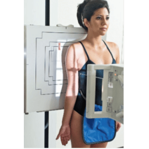
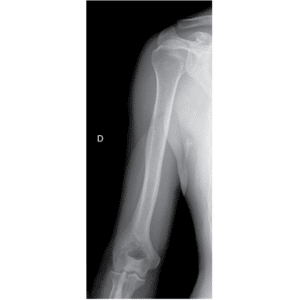
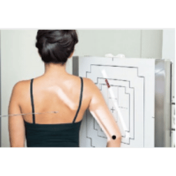
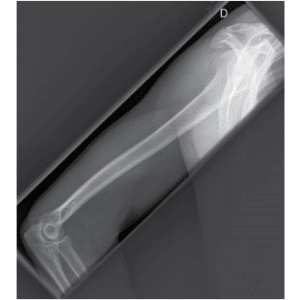

BRAÇO (ÚMERO) - AP
Paciente
Em ortostático ou DD, braço estendido em supinação, centralizar o úmero sobre a metade do chassi.
Chassis / Filme
30×40 ou 35×43 na longitudinal.
Raio central
⊥ orientado para a diáfise umeral.
DFF
1,00 m – com bucky.


BRAÇO (ÚMERO) - PERFIL
Paciente
Em ortostático ou DD, braço em abdução, cotovelo fletido, mão em perfil, centralizar o úmero sobre a metade do chassi.
Chassis / Filme
30×40 ou 35×43 na longitudinal.
Raio central
⊥ orientado para a diáfise umeral.
DFF
1,00 m – com bucky.

